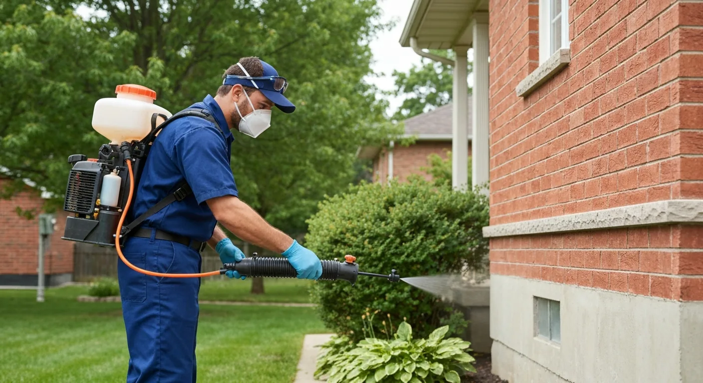
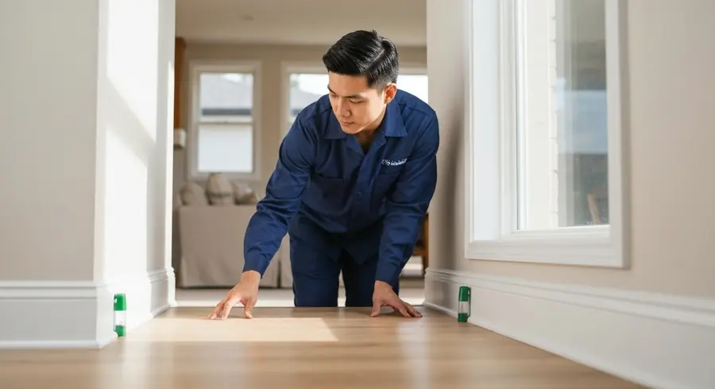
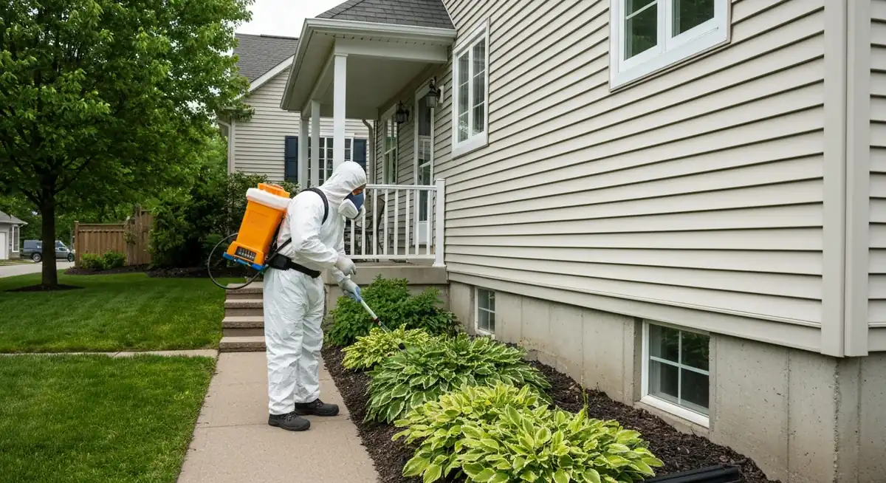

Certified pest control for Guelph homes and businesses. Mice, ants, wasps, bed bugs and more — eliminated fast.
Entry point sealing, bait stations, and monitoring programs to eliminate rodent infestations and prevent return.
Carpenter ants, pavement ants, odorous house ants — we treat at the colony level, not just what you see.
Nest removal and treatment for ground wasps, paper wasps, yellow jackets, and baldfaced hornets.
Heat treatment and chemical programs to fully eliminate bed bug infestations — not just suppress them.
Cockroaches, silverfish, earwigs, boxelder bugs — full home pest management programs.
Ongoing pest management programs for restaurants, warehouses, offices, and multi-unit residential.



Licensed Ontario exterminators — safe, regulated treatments
We return at no charge if pests come back within warranty
Pet and family-safe treatment options available
Serving Guelph & Wellington County homes and businesses
Guelph's blend of residential neighbourhoods, mature trees, and proximity to agricultural land creates ideal conditions for a wide range of pest pressures. Mice are the most common call — they begin entering homes in early fall as temperatures drop, squeezing through gaps as small as a dime. Carpenter ants are a summer concern, particularly in homes with older wood, moisture damage, or nearby stumps. Wasps build nests through spring and summer, often in soffit voids, under decks, and in landscape shrubs.
Effective pest control requires addressing the root cause, not just killing what's visible. A mouse infestation treated with snap traps and no entry point sealing is a recurring problem. An ant colony treated at the surface with spray returns because the queen and satellite colonies underground are unaffected. Professional pest management starts with an inspection to understand what species, how they're entering, what's attracting them, and what's the most appropriate treatment.
We are licensed under the Ontario Pesticides Act and use only approved formulations. We offer pet-safe and family-safe options for households with children or animals, and we clearly communicate any precautions required after treatment. Not every pest problem requires chemical intervention — exclusion, habitat modification, and monitoring are part of the toolkit.
Bed bugs deserve special mention because they're misunderstood. They spread through travel, secondhand furniture, and multi-unit buildings — not poor housekeeping. They're extremely difficult to eliminate without professional treatment. Heat treatment (raising the room temperature to 50°C for several hours) is the most effective single-treatment option; chemical programs require multiple visits but are effective when followed correctly.
Guelph's commercial sector — particularly restaurants, food processing, and multi-unit residential — requires ongoing pest management programs with inspection reports and regulatory documentation. We provide commercial programs tailored to your industry's requirements.
We serve Guelph, Fergus, Elora, Rockwood, Cambridge, and all of Wellington County.
We provide pest control services throughout Guelph and the surrounding region:
A standard pest treatment in Guelph runs $150–$400 depending on the pest, the size of the property, and the treatment method. Mouse exclusion programs (which include sealing entry points) run $300–$700. Bed bug heat treatment for a typical bedroom is $500–$900. Commercial programs are priced monthly.
Mice enter through gaps around pipes, utility penetrations, poorly sealed doors and windows, gaps at the foundation, and openings in soffits and fascia. A mouse can squeeze through a hole the size of a dime. Sealing entry points is the only permanent solution — bait and traps without exclusion just manage the symptom.
Signs include frass (sawdust-like material) below wooden structures, large black ants (1/4 to 1/2 inch) particularly active at night, and a faint rustling sound inside walls. Carpenter ants don't eat wood — they excavate it to nest. Moisture damage attracts them; fixing the moisture source is part of the solution.
We offer low-toxicity and pet-safe treatment options for most pest categories. We'll discuss what's being used, how it works, and any precautions (such as keeping pets off treated surfaces for a period of time) at the time of treatment. All products we use are approved for use in Ontario.
Wasp nest removal should be done in the evening when wasps are less active and most are in the nest. Never seal a nest opening without treating it first — trapped wasps will chew through drywall or other materials to escape. We treat and remove nests safely and can advise on preventing future nesting.
Yes — we offer quarterly and semi-annual maintenance programs that include inspection and preventive treatment. These are particularly popular with homeowners who've had recurring mouse or ant issues, and with commercial clients who need ongoing documentation for regulatory compliance.
Contact us today for a free, no-obligation quote for pest control services in Guelph.